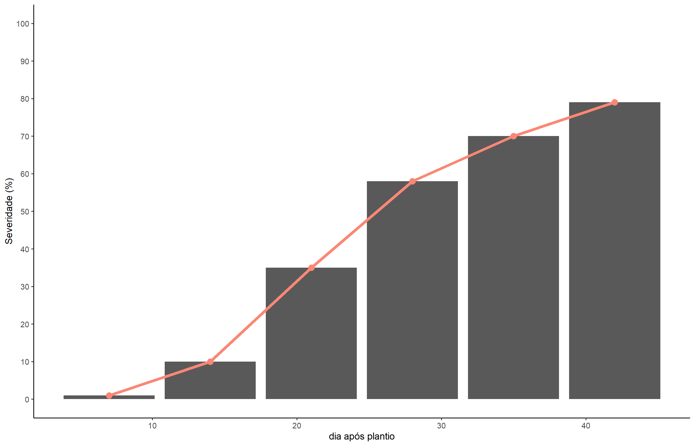

Nesta aula inicial, vamos explorar os conceitos básicos dos programas R e RStudio. Você aprenderá a criar e gerenciar projetos, scripts e arquivos, além de entender como salvar seu trabalho corretamente. Também veremos o passo a passo para instalar e carregar pacotes essenciais, bem como criar estruturas de dados como vetores e data frames. Por fim, faremos algumas operações básicas no RStudio para você começar a se familiarizar com a ferramenta.
Configurando um Projeto no RStudio e Criando Documentos Quarto
Iniciando um Projeto no RStudio
Para organizar os arquivos da disciplina, o primeiro passo é criar um novo projeto no RStudio, isso criará uma pasta dedicada ao seu trabalho, mantendo todos os arquivos organizados em um único local. Para isso:
No menu superior do RStudio, clique em File >New Project… >New Directory.
Selecione “New Project”, defina um nome para o projeto e escolha a pasta onde ele será salvo.
Finalize clicando em “Create Project”.
Criando Scripts e Documentos
Após criar o projeto, é hora de começar a construir os arquivos onde serão escritos os códigos, comentários e interpretações.
Scripts R
Para criar um novo script, onde você pode escrever e testar seus códigos em R:
Vá em File >New File >R Script.
Esse tipo de arquivo é útil para testar funções, fazer experimentos com códigos e salvar pequenos trechos de análise.
Documentos Quarto (.qmd)
Durante a disciplina, utilizaremos principalmente documentos no formato Quarto (.qmd). Esses arquivos permitem integrar texto, código e resultados (como gráficos e tabelas) no mesmo lugar. Para criar um documento nesse formato:
Acesse File >New File >Quarto Document….
Na janela seguinte, defina um título e o nome do autor.
Clique em Create.
Importação e Exploração de Dados
Importamos e exploramos o conjunto de dados Orange, que já está disponível por padrão no R. Esse banco contém informações sobre o crescimento de árvores cítricas, como a idade e a circunferência do tronco.
Aqui foi criado um objeto chamado DADOS que recebe o banco de dados Orange. O simbolo “<-” é o operador de atribuição do R. Atribuindo o valor da direita ao objeto da esquerda. O operador $ foi utilizado para acessar colunas específicas, como circumference. Também utilizamos a função plot() para gerar um gráfico simples dessa variável.
Nesta etapa, trabalhamos com a criação de novos objetos a partir do conjunto de dados original dados. Essas ações são úteis para manipular partes específicas da base ou realizar transformações de maneira organizada.
dados2 <- dados
Além disso, foi extraida apenas a coluna circumference e armazenamos seus valores em um novo vetor chamado circ:
Com base nesse vetor, criamos um novo chamado circ2, no qual cada valor foi acrescido de 10 cm. Essa modificação simula um cenário hipotético de crescimento adicional no diâmetro dos troncos.
A função attach() permite acessar diretamente as colunas de interesse sem precissar usar o $. Assim você pode chamar apenas a coluna especifica sem precisar digitar “dados$…”. E detach() desfaz o attach, sendo necessario voltar a usar o $ para acessar as colunas de interesse.
pacote 'agricolae' desempacotado com sucesso e somas MD5 verificadas
Os pacotes binários baixados estão em
C:\Users\lucas\AppData\Local\Temp\Rtmp4K8GbR\downloaded_packages
Após a instalação, o pacote pode ser carregado em qualquer sessão do R usando a função library() .
library(agricolae)
O pacote carregado na aula intitulado agricolae é utilizado principalmente para análises experimentais aplicadas à agricultura. Entre suas funcionalidades, estão testes estatísticos, cálculos de variáveis agronômicas e acesso a conjuntos de dados internos, exemplo corn.
Após carregar o pacote, são criados dois vetores: dates, contendo os dias de avaliação, e severity, com os valores de severidade da doença em cada data. A função audpc() (Área Abaixo da Curva de Progresso da Doença) é utilizada para calcular uma medida acumulada da severidade ao longo do tempo. Esse valor resume a evolução da doença em um único número:
A função str() (estrutura) mostra as variáveis presentes no conjunto, seus tipos e alguns exemplos de dados.
Visualização de Dados com tidyverse
O tidyverse é uma coleção de pacotes integrados (como ggplot2, dplyr, readr, entre outros) voltados para a manipulação, análise e visualização de dados.
Após carregar o pacote, são definidos dois vetores com valores simulados:
Esses vetores representam a severidade de uma doença observada ao longo de dias após o plantio. Para trabalhar com esses dados de maneira estruturada, cria-se um data.frame nomeado como data_curva, que organiza os vetores em forma de tabela:
'data.frame': 6 obs. of 2 variables:
$ dates : num 7 14 21 28 35 42
$ severity: num 0.1 5 10 35 50 60
Criação de Gráfico com ggplot2
O pacote ggplot2, incluído no tidyverse, permite criar gráficos personalizados e informativos. O seguinte código produz um gráfico combinando barras, linha e pontos, representando a evolução da severidade ao longo do tempo.
Primeiro, uma nova variável severity2 é adicionada com valores ajustados de severidade:
data_curva |>mutate(severity2 =c(1, 10, 35, 58, 70, 79)) |>ggplot(aes(x = dates, y = severity2))+geom_col()+geom_line(linewidth =2, color ="#FA8775") +geom_point(size =4, color ="#FA8775") +theme_classic(base_size =14)+labs(x ="dia após plantio",y ="Severidade (%)")+scale_y_continuous (limits =c(0, 100), n.breaks =10)+scale_x_continuous(n.breaks =8)

Para esse gráfico foi utilizado as seguintes funções:
mutate(): cria a nova coluna severity2.
geom_col(): plota colunas verticais para representar os dados.
geom_line() e geom_point(): adicionam uma linha e pontos sobre as colunas, enfatizando a tendência dos dados.
theme_classic(): define um estilo visual limpo.
labs(): define os rótulos dos eixos.
scale_*_continuous(): ajusta os eixos para facilitar a leitura.